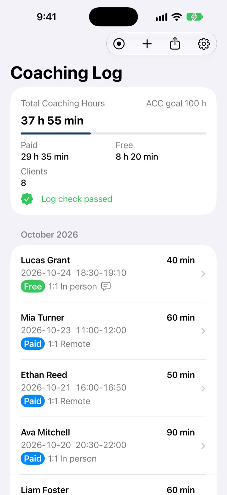
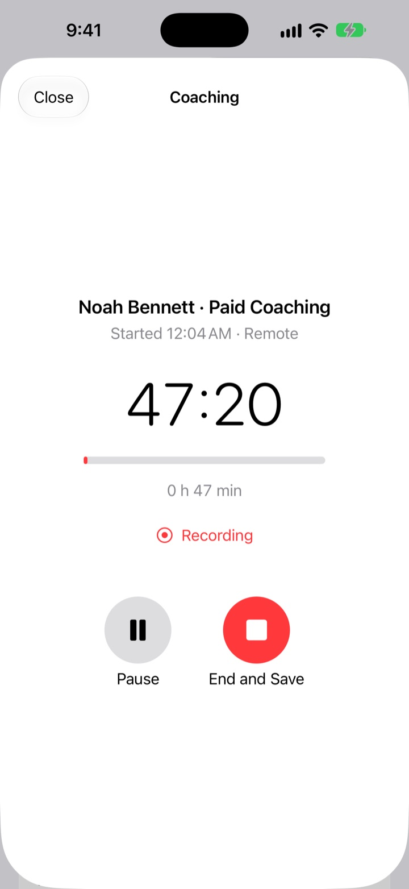
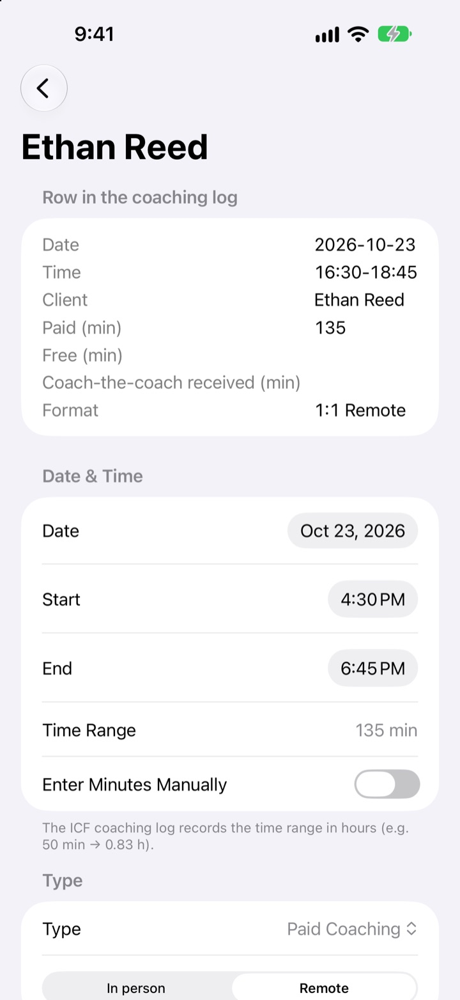
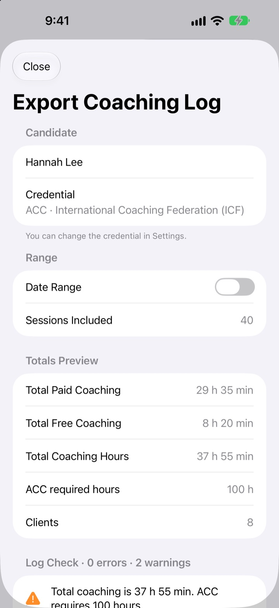

Record the session.
The log writes itself.
From Start to End, the date, times and minutes are logged and the conversation is transcribed. Every entry is checked against your credential's logging rules, then exported as a file ready to submit.
Every feature is free. For iPhone, iPad and Mac.

Run a log check
This sample log has a few mistakes planted in it. Fix or delete the entries marked in red, and switch credentials to see how the rules change.
Spending longer on the log than on the coaching?
After every session you copy down the start and end times, work out the minutes, and count how many times you saw the same client that day. Then, right before you submit, a 135-minute session and a 25-minute one turn up. Coaching Log keeps the record from a single Record button and checks it against the association's rules before you send anything.
The Record button keeps the time
The moment you tap Start is your start time, and the moment you tap End is your end time. Incoming calls pause the session, and recording keeps going on the Lock Screen. If a client hasn't agreed to be recorded, use the timer to log time only.
On iOS 26 and macOS 26 or later, the conversation is transcribed on your device. Tap any sentence to play the audio from that point.

Catch the entries that would be rejected
Sessions of 30 to 120 minutes, at most two sessions and 120 minutes per client per day, double-counted coach-the-coach time, groups up to 1:9, overlapping sessions and sessions before your training began are all checked. Problem entries get a red mark that says what's wrong.
Extra time is fixed in one tap by moving the end time.

A file ready to submit, in one tap
Korea Coach Association credentials export an Excel file that matches the official coaching log form. ICF credentials export a CSV in ICF coaching log column order. Entries are sorted by date and the hour and minute totals are filled in.
Add past sessions field by field, or import audio you recorded with Zoom or Voice Memos.

Three steps to a log you can submit
- 1
Pick your credential
Enter your credential, your name and your training start date in Settings.
- 2
Record the session
Choose the client and paid or free, tap Start, then End when you're done.
- 3
Check and export
Fix anything in red, then save as Excel or CSV and share.
Requirements by credential
- KAC · Korea Coach Association
- 20 hours of training, 50 hours of practice (up to 25 CTC), at least 3 clients
- KPC · Korea Coach Association
- 60 hours of training, 200 hours of practice (up to 80 CTC), 5 hours mentor coaching, 5 hours coach-the-coach
- KSC · Korea Coach Association
- 150 hours of training, 800 hours of practice (up to 100 CTC), 10 hours mentor coaching, 10 hours coach-the-coach
- ACC · ICF
- 60 hours of training, 100 hours of practice (at least 75 paid), 10 hours mentor coaching, at least 8 clients
- PCC · ICF
- 125 hours of training, 500 hours of practice (at least 450 paid), 10 hours mentor coaching, at least 25 clients
- MCC · ICF
- 200 hours of training, 2,500 hours of practice (at least 2,250 paid), 10 hours mentor coaching, at least 35 clients
Pick a credential in Settings and the goal hours, checks and export format follow it. Requirements can change, so check the latest guidance from each association before you apply. This app is not made by or affiliated with the Korea Coach Association or the International Coaching Federation.
Everything is free
Free
- Session recording and timer
- On-device transcription
- Log checks for your credential
- Excel and CSV export
- Manual entry and audio import
- App Lock with Face ID
Support the developer
- Send a small tip from Settings
- Tips don't unlock anything extra
Not a subscription. Each tip is a one-time payment.
No ads, and no account needed.
Questions
How do I change my credential?
In Settings, choose KAC, KPC, KSC, ACC, PCC or MCC. Goal hours, log checks and the export format all follow the credential you choose.
Can I log time without recording?
Yes. If your client hasn't agreed to be recorded, use the timer to log just the start and end times. Only record sessions with your client's consent.
How do I add past sessions?
Tap the plus button above the list to enter a session by hand, or import audio you recorded with Zoom or Voice Memos.
Transcription isn't working.
On iOS 26 and macOS 26 or later, transcription runs on device. On earlier versions, check the speech recognition option in Settings. With “On-device recognition only” turned on, transcription may not be available if your device doesn't support it.
What does a red mark mean?
The entry doesn't meet the Korea Coach Association logging rules or ICF requirements. Open it to see what's wrong, and fix extra time in one tap. The app can't tell which sessions happened during your coach training (rule 5), so remove those yourself.
How do I create the file to submit?
Tap the share button. Korea Coach Association credentials export an Excel file, and ICF credentials export a CSV file. Fix any logging errors first.
Where is my data stored?
Every record and recording stays on this device, and the developer can't see any of it. The app collects no data. Deleting the app deletes your records too, so export anything you want to keep first.
How do I turn on App Lock?
Turn on App Lock in Settings and you'll unlock the app with Face ID, Touch ID or your passcode each time you open it. Its contents are also hidden in the app switcher.
Which devices does it run on?
iPhone and iPad with iOS 17 or later, and Mac with macOS 14 or later. On-device transcription needs iOS 26 or macOS 26.
How do I get in touch?
Email leeo@kakao.com or open an issue on GitHub at M1zz/KACCoachingLog. Please don't include client names or anything from your recordings.
Questions or feedback? Write to leeo@kakao.com.